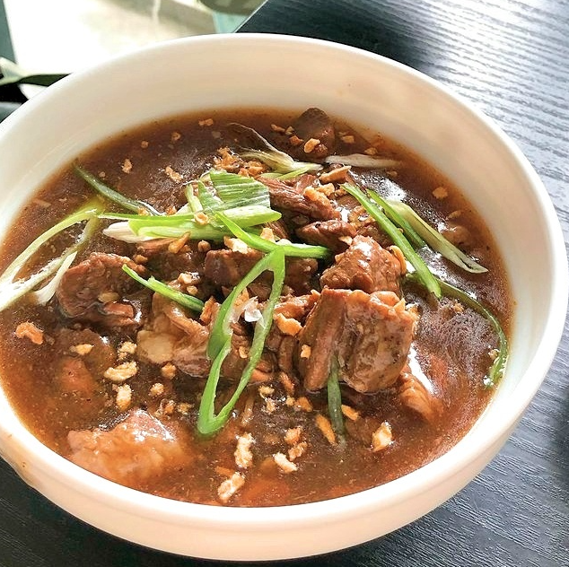

Beef Pares

Hearty braised beef in a bowl of soup
Beef pares is another famous dish in Philippines that is commonly served in small eateries or sidewalks. The dish is famous for its simplicity and good taste.
"Pares" means "combine" in which the dish is basically a combination of braised beef and a bowl of soup. Pares is usually paired with garlic rice
Ingredients
- 1 kilo Beef Brisket cut into cubes
- 1 head minced garlic
- 1 medium size onion quartered
- 1 large onion chopped
- 1 tbsp. grated ginger
- 1/2 cup soy sauce
- 1/2 cup brown sugar
- 2 pcs. star anise
- 1 tsp. ground pepper
- 1 tsp. cornstarch
- 1 tsp. sesame oil optional
- salt to taste
- scallion or sibuyas mura for garnishing
Instructions
- Boil the beef briskets in a pot with water, salt and onion. Remove the scum and cook until tender.
- Transfer the meat to a bowl and set aside. Don't throw away the soup stock and set aside also.
- In another pot or deep pan, saute the ginger, garlic and onion.
- Put the boiled meat and stir fry for a few minutes and season with soy sauce, brown sugar, star anise and pepper.
- Pour about 2 cups of soup stock. Simmer for about 5 minutes.
- Add the cornstarch mixed with a little water to the pot to thicken the sauce.
- Season with sesame oil and transfer to a bowl. Garnish with fried toasted garlic.
- Serve with garlic rice and soup stock garnished with scallion.
Contents of this page are based on the recipe found from here
Back to Main Page